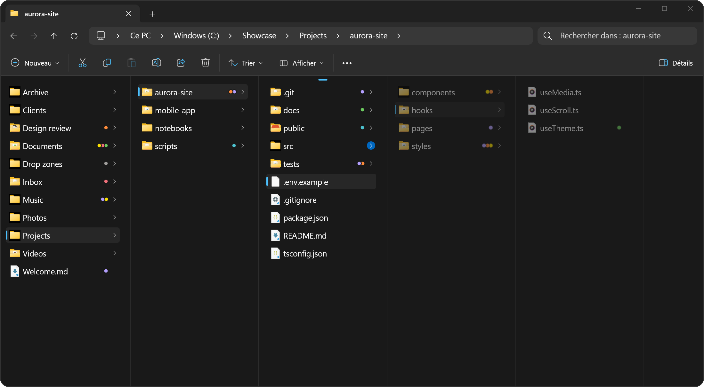
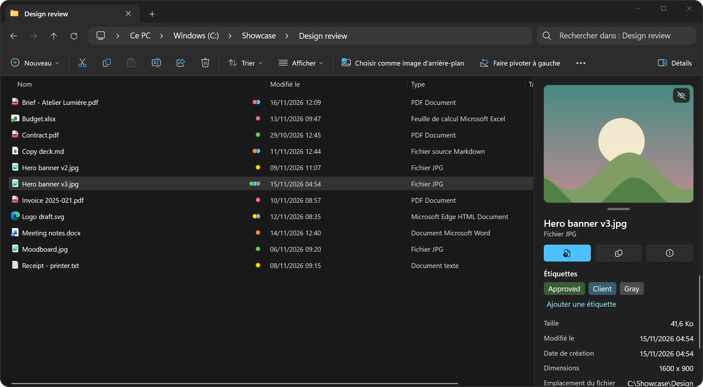
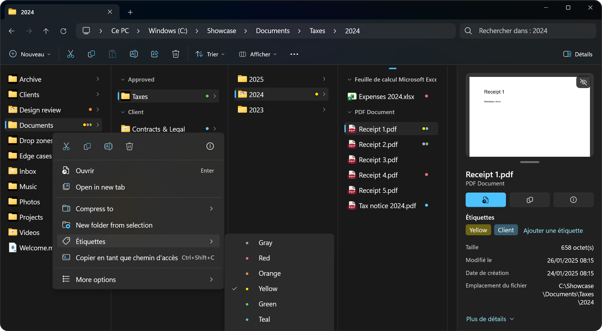

Explorer Extras
Extra features for File Explorer on Windows 11, one switch per feature.
A 40-second tour. If the video does not play here, watch it directly.
Explorer Extras is a Windhawk mod. It adds four independent features to File Explorer. Each has its own section and its own off switch on the mod's page in Windhawk: turn on what you like, and the rest stays out of the way.
| Feature | In one line |
|---|---|
| Columns | Miller columns in the View menu, with drag and drop, touch and per-folder memory. |
| Details pane | One pane for details and real previews of PDF, text, Markdown, images, video and sound. |
| Labels | Colour tags on files and folders, usable in Explorer's own Sort by and Group by. |
| Toolbar | Tighter buttons, a search box you drag to resize, and round corners. |
Columns

One column per folder level. The dots after the names are labels.
Browse folders the way you do on a Mac: one column per folder level, side by side. Open the View menu of a File Explorer window and choose Columns.
- It feels like Explorer. Sorting, grouping, icons, thumbnails and the right-click menu all come from Windows itself. The menu is tidied up: quick actions on top, "Show more options" for the full list.
- Keyboard, selection and undo. Arrow keys, type to jump, F2 (also for several items at once), Delete, copy and paste, a rubber band, and Ctrl+Z to take back a delete, a rename or a new folder.
- Drag and drop, and touch. Between columns, into the navigation pane, to other windows and apps, and back. Tap, hold, drag and select with a finger.
- Tabs and memory. Each tab keeps its own columns, and each folder remembers its sort, its grouping, its column widths and whether you showed it in Columns.
- Archives. Zip, 7z, rar and tar files open like folders.
Details pane

The details pane beside Explorer's own list: a preview, the labels of the selected file and its details.
One pane that replaces Explorer's Details and Preview panes, in Columns and in every view. Press Alt+P, or use the View menu or the toolbar button, to show or hide it.
- Real previews. PDF, text and code, Markdown, images (zoom, pan, animated GIF), video and sound.
- Details by type. A folder's size and contents are counted when you press Calculate, or by themselves if you turn that on.
- Several files at once. A fanned stack of thumbnails.
- You stay in control. Each kind of preview can be switched off, and has a size limit.
Labels

Columns grouped by label, the Tags entry (Étiquettes in French) of the right-click menu, and the Tags section of the pane.
Colour labels, like the tags of macOS, on files and folders.
- Colours and names. Seven colours and a neutral gray, an optional name, up to 16 on an item. Give each colour a meaning in the settings, such as "Red = Urgent".
- Seen everywhere. A dot after the name, in every view of Explorer's list and in Columns, in step with the light or dark theme.
- Easy to set. In the Tags section of the details pane, or from the right-click menu: a Tags entry with the colours, Add tag and Clear tags. The last eight names you typed are listed, so you type each one once.
- Sort and group. Explorer's own Group by and Sort by use them: choose Tags (Étiquettes in French; under More for Sort by) and each label becomes a group. An item with two labels is in both groups.
- They follow the file. A label is stored in the file itself, so it survives copying or moving on NTFS drives, and the file's dates do not change. See "Good to know" below.
Toolbar
Tidy the top of the window. Each part is a setting, and one switch gives Explorer's own look back.
- Navigation buttons. Back, Forward, Up and Refresh sit closer together, and the address bar sits closer to them.
- Command bar. New, Cut, Copy, Paste and the rest sit closer together.
- Search box. Drag the edge between the address bar and the search box to resize it, with the mouse, a finger or a pen. A double click or double tap goes back to the width in the settings.
- Round corners. A corner radius for the address bar and one for the search box, up to fully round.
Install
- Install Windhawk.
- In Windhawk, open Explore, search for Explorer Extras and click Install. The mod is also on its catalog page: https://windhawk.net/mods/explorer-extras
- Enable the mod, then open a File Explorer window. For Columns, use the View menu and choose Columns. The details pane replaces Explorer's own Details pane: press Alt+P.
Not in the catalog yet, or you want to build it yourself? In Windhawk choose Create a new mod, replace the code with the contents of explorer-extras.wh.cpp, and compile it (Ctrl+B).
The mod needs Windhawk to download the symbols of FileExplorerExtensions.dll, which has worked on every Windows build tested. If symbols are missing right after a Windows update, the mod waits and logs it.
Settings
The mod's page in Windhawk has a group per feature, and the first setting of each is its off switch. A Limits group holds the largest folder a column lists, the largest document to preview and the largest image to open at once. Settings apply at once, with no restart. The full list is in docs/settings.md.
Good to know
- Labels stay in your files. They are written into the files themselves (an NTFS stream), so they stay there after the mod is disabled or uninstalled, and also on a network share that supports named streams. To take them off, use Clear tags (in the pane or the right-click menu) while the mod is still running.
- Removing the mod leaves Explorer as it was, apart from those labels.
- Works with QuickLook. Explorer's own view follows the active column, so QuickLook previews the selected item as it does anywhere else.
- Tested daily on Windows 11 24H2 (build 26100) on ARM64, in French and English. x86-64 was tested up to version 0.55.
- Built with AI assistance (Claude Code) under the author's direction, and tested by hand. It has not had an independent code audit, so please report anything odd.
Feedback
Found a bug, or have an idea? Open an issue: bug report or feature suggestion. A bug report is easiest to follow with the mod's version, your Windows build and the log (Windhawk, the mod's Advanced tab, logging). How reports are handled is in FEEDBACK.md.
Support
Explorer Extras is free. If you like it, you can support the work on Ko-fi.
For developers
The mod is one file for Windhawk but is kept in parts under src/, joined by a script:
python explorer-extras/build.py # writes explorer-extras.wh.cpp
python explorer-extras/build.py --check # exits 1 if the generated file is out of date
Edit the parts, never the generated file. tools/deploy-explorer-extras.ps1 builds a test version that also writes a log file, compiles it with Windhawk's own compiler and deploys it (one administrator prompt), and tools/smoke-test-explorer-extras.ps1 then opens a window and checks what the mod must have placed. tools/crash-analysis/ reads an Explorer crash dump without a debugger.
CHANGELOG.md: what changed in each release.FEEDBACK.md: how issues and suggestions are handled.HANDOFF.md: how the work is run, the architecture, and what costs time.PLAN.md: findings from the probes and the decisions behind the design.../ROADMAP.md: what is done, tested and open.
License
MIT.